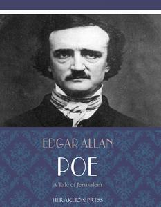

A Tale of Jerusalem
(pulished 1832)
Intensos rigidam in frontem ascendere canos
Passus erat
Lucan
--a bristly bore.
Translation
"LET us hurry to the walls," said Abel-Phittim to Buzi-Ben-Levi and Simeon the Pharisee, on the tenth day of the month Thammuz, in the year of the world three thousand nine hundred and forty-one–"let us hasten to the ramparts adjoining the gate of Benjamin, which is in the city of David, and overlooking the camp of the uncircumcised; for it is the last hour of the fourth watch, being sunrise; and the idolaters, in fulfilment of the promise of Pompey, should be awaiting us with the lambs for the sacrifices."
Simeon, Abel-Phittim, and Buzi-Ben-Levi, were the Gizbarim, or sub-collectors of the offering, in the holy city of Jerusalem.
"Verily," replied the Pharisee, "let us hasten: for this generosity in the heathen is unwonted; and fickle-mindedness has ever been an attribute of the worshippers of Baal."
"That they are fickle-minded and treacherous is as true as the Pentateuch," said Buzi-Ben-Levi, "but that is only towards the people of Adonai. When was it ever known that the Ammonites proved wanting to their own interests? Methinks it is no great stretch of generosity to allow us lambs for the altar of the Lord, receiving in lieu thereof thirty silver shekels per head!"
"Thou forgettest, however, Ben-Levi," replied Abel-Phittim, "that the Roman Pompey, who is now impiously besieging the city of the Most High, has no assurity that we apply not the lambs thus purchased for the altar, to the sustenance of the body, rather than of the spirit."
"Now, by the five corners of my beard!" shouted the Pharisee, who belonged to the sect called The Dashers (that little knot of saints whose manner of dashing and lacerating the feet against the pavement was long a thorn and a reproach to less zealous devotees–a stumbling-block to less gifted perambulators)–"by the five corners of that beard which, as a priest, I am forbidden to shave!–have we lived to see the day when a blaspheming and idolatrous upstart of Rome shall accuse us of appropriating to the appetites of the flesh the most holy and consecrated elements? Have we lived to see the day when-"
"Let us not question the motives of the Philistine," interrupted Abel-Phittim, "for to-day we profit for the first time by his avarice or by his generosity, but rather let us hurry to the ramparts, lest offerings should be wanting for that altar whose fire the rains of heaven cannot extinguish, and whose pillars of smoke no tempest can turn aside."
That part of the city to which our worthy Gizbarin now hastened, and which bore the name of its architect, King David, was esteemed the most strongly fortified district of Jerusalem; being situated upon the steep and lofty hill of Zion. Here, a broad, deep, circumvallatory trench, hewn from the solid rock, was defended by a wall of great strength erected upon its inner edge. This wall was adorned, at regular interspaces, by square towers of white marble; the lowest sixty, and the highest one hundred and twenty cubits in height. But, in the vicinity of the gate of Benjamin, the wall arose by no means from the margin of the fosse. On the contrary, between the level of the ditch and the basement of the rampart, sprang up a perpendicular cliff of two hundred and fifty cubits, forming part of the precipitous Mount Moriah. So that when Simeon and his associates arrived on the summit of the tower called Adoni-Bezek–the loftiest of all the turrets around about Jerusalem, and the usual place of conference with the besieging army–they looked down upon the camp of the enemy from an eminence excelling by many feet that of the Pyramid of Cheops, and, by several, that of the temple of Belus.
"Verily," sighed the Pharisee, as he peered dizzly over the precipice, "the uncircumcised are as the sands by the seashore–as the locusts in the wilderness! The valley of The King hath become the valley of Adommin."
"And yet," added Ben-Levi, "thou canst not point me out a Philistine–no, not one–from Aleph to Tau–from the wilderness to the battlements–who seemeth any bigger than the letter Jod!"
"Lower away the basket with the shekels of silver!" here shouted a Roman soldier in a hoarse, rough voice, which appeared to issue from the regions of Pluto–"lower away the basket with the accursed coin which it has broken the jaw of a noble Roman to pronounce! Is it thus you evince your gratitude to our master Pompeius, who, in his condescension, has thought fit to listen to your idolatrous importunities? The god Phoebus, who is a true god, has been charioted for an hour–and were you not to be on the ramparts by sunrise? Aedepol! do you think that we, the conquerors of the world, have nothing better to do than stand waiting by the walls of every kennel, to traffic with the dogs of the earth? Lower away! I say–and see that your trumpery be bright in color and just in weight!"
"El Elohim!" ejaculated the Pharisee, as the discordant tones of the centurion rattled up the crags of the precipice, and fainted away against the temple–"El Elohim!–who is the God Phoebus?–whom doth the blasphemer invoke? Thou, Buzi-Ben-Levi! who art read in the laws of the Gentiles, and hast sojourned among them who dabble with the Teraphim!–is it Nergal of whom the idolater speaketh?–or Ashimah?–or–Nibhaz?–or Tartak?–or Adramalech?–or Anamalech?–or Succoth-Benith?–or Dragon?–or Belial?–or Baal-Perith?–or Baal-Peor?–or Baal-Zebub?"
"Verily it is neither–but beware how thou lettest the rope slip too rapidly through thy fingers; for should the wicker-work chance to hang on the projection of yonder crag, there will be a woful outpouring of the holy things of the sanctuary."
By the assistance of some rudely constructed machinery, the heavily laden basket was now carefully lowered down among the multitude; and, from the giddy pinnacle, the Romans were seen gathering confusedly round it; but owing to the vast height and the prevalence of a fog, no distinct view of their operations could be obtained.
Half an hour had already elapsed.
"We shall be too late!" sighed the Pharisee, as at the expiration of this period, he looked over into the abyss–"we shall be too late! we shall be turned out of office by the Katholim."
"No more," responded Abel-Phittim,–"no more shall we feast upon the fat of the land–no longer shall our beards be odorous with frankincense–our loins girded up with fine linen from the Temple."
"Raca!" swore Ben-Levi, "Raca! do they mean to defraud us of the purchase money? or, Holy Moses! are they weighing the shekels of the tabernacle?
"They have given the signal at last!" cried the Pharisee–"they have given the signal at last!–pull away, Abel-Phittim!–and thou, Buzi-Ben-Levi, pull away!–for verily the Philistines have either still hold upon the basket, or the Lord hath softened their hearts to place therein a beast of good weight!" And the Gizbarim pulled away, while their burthen swung heavily upwards through the still increasing mist.
"Booshoh he!"–as, at the conclusion of an hour, some object at the extremity of the rope became indistinctly visible–"Booshoh he!" was the exclamation which burst from the lips of Ben-Levi.
"Booshoh he!–for shame!–it is a ram from the thickets of Engedi, and as rugged as the valley of Jehosaphat!"
"It is a firstling of the flock," said Abel-Phittim, "I know him by the bleating of his lips, and the innocent folding of his limbs. His eyes are more beautiful than the jewels of the Pectoral, and his flesh is like the honey of Hebron."
"It is a fatted calf from the pastures of Bashan," said the Pharisee, "the heathen have dealt wonderfully with us!–let us raise up our voices in a psalm!–let us give thanks on the shawm and on the psaltery–on the harp and on the huggab–on the cythern and on the sackbutt"
It was not until the basket had arrived within a few feet of the Gizbarium, that a low grunt betrayed to their perception a hog of no common size.
"Now El Emanu!" slowly, and with upturned eyes ejaculated the trio, as, letting go their hold, the emancipated porker tumbled headlong among the Philistines, "El Emanu!–God be with us–it is the unutterable flesh!"
Es un cuento que sigue la historia de un grupo de hombres quienes buscan obtener ganancias y no perder la honra de ir a conseguir sacrificios.Considero que es una obra literaria un poco confusa, pero a la vez nos deja una enseñanza de perseverancia, los individuos protagonistan hacen todo lo imposible para alcanzar su objetivo